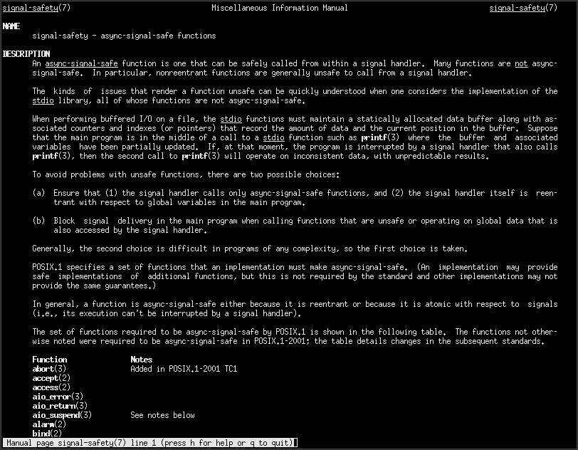

AS-Safe glibc stack traces. A descent into madness. A death by a thousand cuts.
Call me melodramatic, but all I want is a nice, pretty, formatted backtrace from a signal handler.
What am I to do?
Here's an example.
#include <stdio.h>
#include <signal.h>
void handle_sigint(int sig) {
printf("Received SIGINT\n");
}
int main() {
signal(SIGINT, handle_sigint);
while (1); // Loop forever
return 0;
}If you compile and run this, you'll see "Recieved SIGINT" whenever it
receives one, which you can do by pressing ctrl + c in your
terminal. You can send it SIGQUIT to exit by pressing
ctrl + \.
It might surprise you to learn that the example given above is not signal-safe. Why, and what does that mean?
First, open your terminal, and type man signal-safety.
Read it. Read it all. It could, metaphorically speaking, save your life.
Or a few hours debugging.

And also the notes at the end.
While this man page does lay out a lot of crucial information, it leaves a lot to be desired. What's actually more important than what's written there is what isn't. It also explains what you aren't allowed to do, but doesn't explain why. Let's explain why.
The man page says:
If, at that moment, the program is interrupted by a signal handler
that also calls printf(3), then the second call to printf(3) will
operate on inconsistent data, with unpredictable results.Why is this? I thought that printf() was threadsafe?

Well... it is. The problem is, signal handlers are not executed on a different thread. They're actually executed on the same thread. On linux, always the main thread, unless you cleverly configure signal masks. This means that mutexes are useless at preventing race conditions from signal handlers. In fact, they are less than useless. When used correctly, they deadlock.
Note that man signal-safety does not contain even a
single mention of mutexes at all. It should. It should provide a stern
warning. Yet, it doesn't. I reiterate that even more important than
what's written there is what isn't.
Other functions are prone to these issues as well.
malloc(), for example, is ALSO not listed as AS-Safe in
man signal-safety, for the same reasons as
printf(). It's inherently required to operate on global
data, the bookkeeping for which could be overwritten at any time and
cannot be protected by a mutex. Losing malloc() rules out
most other libraries.

Now that we understand signal safety, let's think about what we need to do to implement backtraces that can be obtained from a signal handler.
First, we need a library capable of tracing the stack. You could write this yourself. However, it would require extensive knowledge of the specific platform, and would not be portable. So, if you haven't also written your own platform, you should probably use a library.
In practice, on ARM/x86/RISC-V/Whatever, you have a choice. You can
either use glibc (which is no doubt already installed unless you're
using an all-musl distribution) or libunwind. Since it's
already installed, let's use glibc. To view the docs for the glibc
backtrace library, consult the manual once again and type
man backtrace in your terminal.
The glibc functions are backtrace(),
backtrace_symbols(), backtrace_symbols_fd().
The backtrace_symbols() function returns a
malloc()ed array, so it's out of the picture immediately.
The rest of the functions are not documented as AS-Safe. But, I went on
IRC, asked the glibc maintainers about it, and they said it was
safe.

So, we need to write to a file descriptor. Sure, I thought. How bad could it be? What ensued was agony beyond reason, horror beyond imagination. Or something, I don't know. Melodrama aside, it was much more difficult than I anticipated, and I think that I found a small (but disproportionately painful) oversight in the POSIX standard.
We need to create a file descriptor to write into. How will we do that?
Ideally, the bits and bytes backing the file descriptor should remain
in memory. We should call memfd_create(). So, we look it up
in man signal-safety, and... It isn't there. It's not
required by POSIX to be AS-Safe. That makes sense. It's not even from
posix, it's linux-specific, not portable, and so it wouldn't be
listed.
The glibc implementation of memfd_create() is probably
AS-Safe. Probably. I just read the source, and it's a direct syscall. I
could go ask the maintainers again to make sure. But, even being a
direct syscall isn't enough. Some syscalls are intercepted by libvdso.
And, besides, the POSIX standard doesn't know anything about syscalls.
But, it might actually be safe, depending on what guru you trust. Who is
to say.
Anyway. It's not technically portable. It's not on the list. So,
let's look for other options. How about using mkstemp()?.
It turns out, that isn't marked as AS-Safe either. Strangely enough, if
we want to create a file descriptor in a way that's fully AS-Safe, we
have to create a temp file, on disk, manually, with open().
I think that's a travesty. What if the signal was sent because a disk
error?
It pains me, but let's just call memfd_create() outside
the signal handler and store it to a global variable at the start of the
program, before the signal handler is registered and before it can be
called. We already have to do some setup. We have to preemptively load
the library that glibc's backtrace() is implemented in, so
we may as well do a little extra.
Notably though, we now rely on global state. So, if the signal
handler has to run on multiple threads, or interrupts another signal
handler, it'll clobber the memfile. Luckily,
pthread_sigmask() exists (and newly spun threads inherit
the signal mask) to make sure signal handlers run on only one thread by
default. Also, and struct sigaction::sa_mask exists so that
the signal handling thread cannot be interrupted. So, these are
problems, but solvable ones.
Okay, so now we've called backtrace() and
backtrace_symbols_fd(). Astounding. We have symbol
addresses. But they're printed into a temp file, whether it's a memfile
or a real file on disk. Now, all we have to do is parse them out. So I
wrote the parser. It's not that fancy.
How do we get function names? Luckily there's a tool for this, and
it's addr2line, which is part of the ubiquitous GNU
binutils package. If you're wondering if you have it, you
probably do. We have to shell out. But it's C, and we're sticking to
posix. So, we do the classic pipe(), dup2(),
fork(), exec() song and dance. On the child
end of the pipe, we replace the execution image of the running process
with that of addr2line. On the parent end of the pipe, we
parse the output printed into the temp file.
Agonizingly though, we're still not done. The addr2line
tool doesn't canonicalize file paths. This can be done with
realpath(), but this is a signal handler, and it isn't
listed under man signal-safety. Excellent. So we implement
it manually once again. And by "implement it manually" what I really
mean is steal it from a nerd on StackOverflow. It's very plausible that
the glibc implementation of realpath() is AS-Safe, but it
takes less effort to yoink an implementation than it does to check.
Now that we have all of this information, we can finally print the
stack trace. But... it's not like we can call printf(),
even when we control the output file. Because it's still technically not
AS-Safe. Once again, the correct thing to do is to do all the formatting
manually, then call write() a single time on the output
file descriptor.
Unfortunately, since we must call write() and not
printf(), and fflush() is not AS-Safe for good
reason, there's no real way to deal with the fact that
stdout, stderr, or whatever other
FILE* you're writing to the file descriptor of might have
unflushed data. Even if you could actually call fflush(),
there would be no way to prevent another thread from buffering more data
to it before your write(), since mutexes are unsafe also.
This cannot be circumvented, in any way. So, there's the possibility
that the bactrace you write() to stderr gets
mixed up with other output.
So... that's the implementation. Agony. Here's the code.
Did you know that lazy library loading through the linker calls
malloc()? Did you know this fucks everything up? See my
other article, The
Craziest Bug I have Ever Witnessed, where I found a bug in the julia
runtime implementation of its own backtrace signal handler.
Did you know that signal handlers should not modify the value of
errno? We need to save the value of errno
before we start doing things, and restore it after. This is because
signal handlers hijack the execution of a running thread. If
errno is set in a hijacked thread, it may appear as though
a system call outside the signal hander has failed, or
vice-versa.
#include <errno.h>
void signal_handler(int sig) {
int fd = open("does_not_exist.txt", "r");
assert(fd == -1);
assert(errno == ENOENT);
}
void calling_thread(void) {
errno = 0;
int fd = open("file.txt", "r");
/* Everything is fine, the file opened. */
assert(fd != -1);
assert(errno == 0);
/* Thread hijacked */
if (errno == ENOENT) {
puts("AAAAAAAAGH FUCK HOW");
}
}If I committed the grave sin of accidentally publishing a factual inaccuracy, I don't apologize.
Signals are hard. I wish they weren't. I spent too much time implementing this, and too much time writing this article. I'm done. Let me know on Discord if you find an inaccuracy, but I'm not rewriting this post or the accompanying code, I've already done it too many times. Use it for whatever you want.
I hope that you find this useful. May you never feel my pain.